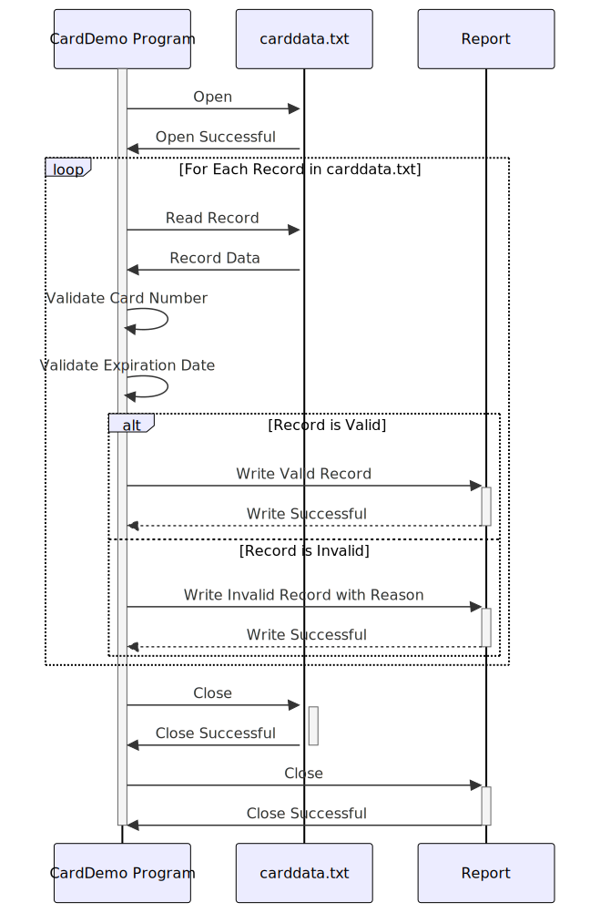

Gerado em: 1 de outubro de 2024
Título do Documento: Programa de Validação e Processamento de Dados de Cartão de Crédito
Descrição Resumida:
Este programa valida informações de cartão de crédito de um arquivo chamado “carddata.txt”. Ele verifica se os números dos cartões são válidos (usando o Algoritmo de Luhn), se as datas de validade estão no futuro e garante que os dados sejam tratados com segurança. Um relatório de registros válidos e inválidos é gerado.
Histórias de Usuário:
Como Analista de Dados, preciso ter certeza de que estou usando apenas registros de cartão de crédito válidos para que minha análise seja precisa e não contenha dados inválidos.
Épico Relacionado:
3 - Gestão de Cartão de Crédito
Requisitos Funcionais:
- Ler dados do arquivo “carddata.txt”.
- O arquivo contém o número do cartão de crédito, o nome do cliente e a data de validade de cada cliente.
- Validar cada registro:
- Número do Cartão:
- Deve ter de 13 a 19 dígitos.
- Deve passar na verificação do Algoritmo de Luhn.
- Data de Validade:
- O formato deve ser YYYY-MM-DD.
- A data deve ser no futuro.
- Gerar um relatório de saída:
- Listar todos os registros de cartão de crédito válidos.
- Listar todos os registros inválidos com o motivo da invalidade (por exemplo, “Número de Cartão Inválido”, “Expirado”).
Requisitos Não Funcionais:
- Segurança:
- O programa deve lidar com as informações do cartão de crédito com segurança, seguindo os padrões PCI DSS.
- Dados confidenciais não devem ser armazenados de forma insegura.
- Desempenho:
- O programa deve processar os dados de forma eficiente.
- O tempo de processamento deve ser minimizado, especialmente para arquivos grandes.
- Manutenibilidade:
- O código deve ser bem documentado e fácil de entender para futuras modificações.
Critérios de Aceitação:
- O programa lê com sucesso todos os registros do arquivo “carddata.txt”.
- Todos os números de cartão de crédito são validados de acordo com o Algoritmo de Luhn.
- Todas as datas de validade são validadas quanto ao formato correto e data futura.
- Um relatório de saída é gerado que:
- Lista com precisão todos os registros de cartão de crédito válidos.
- Lista com precisão todos os registros inválidos com motivos específicos para invalidade.
- O programa lida com erros graciosamente e fornece mensagens informativas.
Melhorias de Código:
- Implementar o registro em log para registrar detalhes de execução do programa, erros e exceções.
- Usar um formato estruturado para o relatório de saída (por exemplo, CSV, JSON) para facilitar a análise de dados.
- Adicionar tratamento de erros para operações de arquivo (por exemplo, arquivo não encontrado, erros de leitura).
Melhorias de Segurança:
- Minimizar o armazenamento e exibição de informações confidenciais do cartão de crédito. Mascarar ou truncar números de cartão quando possível.
- Implementar criptografia para armazenar dados confidenciais se a persistência for necessária.
- Atualizar regularmente as regras de validação para alinhar com os padrões de segurança mais recentes.
Diagrama Conceitual:

–Made by “Smart Engineering” (by Compass.UOL)–